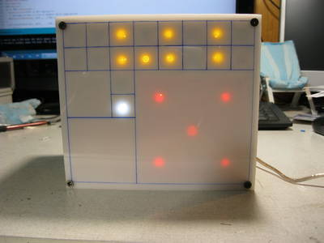
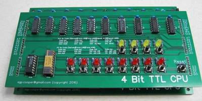
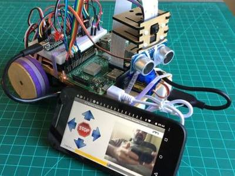
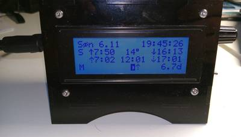
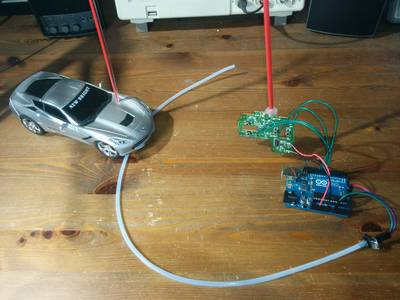

2016-11-10 - Nº 80

Editorial
Esta é a Newsletter Nº 80 que se apresenta com o mesmo formato que as anteriores. Se gostar da Newsletter partilhe-a!
Todas as Newsletters encontram-se indexadas no link.
Esta Newsletter tem os seguintes tópicos:
Esta semana ficámos a saber que o Hyperloop One vai permitir a ligação entre o Dubai e Abu Dhabi em 12 minutos. A DeepMind e a Blizzard juntaram-se para abrir o StarCraft II aos investigadores de Inteligência artificial e Machine Learning, de todo o mundo. No próximo dia 14 vamos ter a maior e mais brilhante super Lua dos últimos 60 anos. Esta observação é possível porque a Lua irá passar a uma distância de 356.511 km, que coincide com a Lua cheia.
Na Newsletter desta semana apresentamos diversos projetos de maker assim como alguns modelos 3D que poderão ser úteis. Na rubrica "Documentação" apresentamos a revista newselectronics de 8 de Novembro.
 João Alves ([email protected])
João Alves ([email protected])
O conteúdo da Newsletter encontra-se sob a licença  Creative Commons Attribution-NonCommercial-ShareAlike 4.0 International License.
Creative Commons Attribution-NonCommercial-ShareAlike 4.0 International License.
Novidades da Semana ^
2016 Ends with Three Supermoons
"Step outside on October 16, and take a look at the moon. Not only will the moon be full, but on that day, the moon will be at its closest point to our planet as it orbits Earth. This makes the October full moon a supermoon. The term supermoon has entered popular consciousness in recent years. Originally a term from modern astrology for a new or full moon that occurs when the moon is within 90% of its closest approach to Earth in a given orbit, supermoon now refers more broadly to a full moon that is closer to Earth than average. But why is the moon closer to Earth at some times but not others?" [...]
We Just Made a Strong Move Ahead in Autonomous Mobility
"Several hours ago and 500 meters high in the Burj Khalifa tower, Hyperloop One signed an agreement with Dubai's Roads and Transport Authority (RTA) to explore high-speed routes in the United Arab Emirates. The RTA runs all the public transport (road, metro, maritime) in Dubai and connects with the infrastructure of greater UAE and the Gulf region beyond. Headlines will talk up the wonders of getting from Dubai to Abu Dhabi in 12 minutes, but the real stories here are how fast Hyperloop One is gaining traction and how our vision for autonomous mobility is starting to come into focus." [...]

DeepMind and Blizzard to release StarCraft II as an AI research environment
"Today at BlizzCon 2016 in Anaheim, California, we announced our collaboration with Blizzard Entertainment to open up StarCraft II to AI and Machine Learning researchers around the world. For almost 20 years, the StarCraft game series has been widely recognised as the pinnacle of 1v1 competitive video games, and among the best PC games of all time. The original StarCraft was an early pioneer in eSports, played at the highest level by elite professional players since the late 90s, and remains incredibly competitive to this day. The StarCraft series longevity in competitive gaming is a testament to Blizzard's design, and their continual effort to balance and refine their games over the years. StarCraft II continues the series renowned eSports tradition, and has been the focus of our work with Blizzard." [...]
Outras Notícias
- The Ocean's Robots May Soon Enjoy High-Speed Internet
- Microchip Launches New Generation of 8-bit AVR MCUs with Core Independent Peripherals
- NASA-3D-Resources
Ciência e Tecnologia ^
Computers Made of Genetic Material?
"Tinier than the AIDS virus - that is currently the circumference of the smallest transistors. The industry has shrunk the central elements of their computer chips to fourteen nanometers in the last sixty years. Conventional methods, however, are hitting physical boundaries. Researchers around the world are looking for alternatives. One method could be the self-organization of complex components from molecules and atoms. Scientists at the Helmholtz-Zentrum Dresden-Rossendorf (HZDR) and Paderborn University have now made an important advance: the physicists conducted a current through gold-plated nanowires, which independently assembled themselves from single DNA strands. Their results have been published in the scientific journal Langmuir." [...]
Semiconductor-free microelectronics are now possible, thanks to metamaterials
"Engineers at the University of California San Diego have fabricated the first semiconductor-free, optically-controlled microelectronic device. Using metamaterials, engineers were able to build a microscale device that shows a 1,000 percent increase in conductivity when activated by low voltage and a low power laser. The discovery paves the way for microelectronic devices that are faster and capable of handling more power, and could also lead to more efficient solar panels. The work was published Nov. 4 in Nature Communications. The capabilities of existing microelectronic devices, such as transistors, are ultimately limited by the properties of their constituent materials, such as their semiconductors, researchers said." [...]
Faster programs, easier programming
"Dynamic programming is a technique that can yield relatively efficient solutions to computational problems in economics, genomic analysis, and other fields. But adapting it to computer chips with multiple cores, or processing units, requires a level of programming expertise that few economists and biologists have. Researchers from MIT's Computer Science and Artificial Intelligence Laboratory (CSAIL) and Stony Brook University aim to change that, with a new system that allows users to describe what they want their programs to do in very general terms. It then automatically produces versions of those programs that are optimized to run on multicore chips. It also guarantees that the new versions will yield exactly the same results that the single-core versions would, albeit much faster." [...]
New 'optofluidic' technology taps power of diatoms to improve sensor performance
"Researchers at Oregon State University have combined one of nature's tiny miracles, the diatom, with a version of inkjet printing and optical sensing to create an exceptional sensing device that may be up to 10 million times more sensitive than some other commonly used approaches. A patent has been approved on the new 'optofluidic' technology, and the findings published in the journal Nanoscale. When implemented in working devices, this approach might improve biomedical sensing of cancer biomarkers; be used for extraordinarily precise forensics work; save the lives of military personnel in combat situations; detect illegal drugs; or help tell whether organic food is really pesticide free or not. The enormous sensitivity and low cost of the technology may have endless applications, researchers say, ranging from health monitoring to environmental protection, biological experiments and other uses." [...]
Scientists set traps for atoms with single-particle precision
"Atoms, photons, and other quantum particles are often capricious and finicky by nature; very rarely at a standstill, they often collide with others of their kind. But if such particles can be individually corralled and controlled in large numbers, they may be harnessed as quantum bits, or qubits - tiny units of information whose state or orientation can be used to carry out calculations at rates significantly faster than today's semiconductor-based computer chips. In recent years, scientists have come up with ways to isolate and manipulate individual quantum particles. But such techniques have been difficult to scale up, and the lack of a reliable way to manipulate large numbers of atoms remains a significant roadblock toward quantum computing." [...]

Engineers design ultralow power transistors that could function for years without a battery
"A newly-developed form of transistor opens up a range of new electronic applications including wearable or implantable devices by drastically reducing the amount of power used. Devices based on this type of ultralow power transistor, developed by engineers at the University of Cambridge, could function for months or even years without a battery by 'scavenging' energy from their environment. Using a similar principle to a computer in sleep mode, the new transistor harnesses a tiny 'leakage' of electrical current, known as a near-off-state current, for its operations. This leak, like water dripping from a faulty tap, is a characteristic of all transistors, but this is the first time that it has been effectively captured and used functionally. The results, reported in the journal Science, open up new avenues for system design for the Internet of Things, in which most of the things we interact with every day are connected to the Internet." [...]
Legions of nanorobots target cancerous tumours with precision
"Researchers from Polytechnique Montral, Universit de Montral and McGill University have just achieved a spectacular breakthrough in cancer research. They have developed new nanorobotic agents capable of navigating through the bloodstream to administer a drug with precision by specifically targeting the active cancerous cells of tumours. This way of injecting medication ensures the optimal targeting of a tumour and avoids jeopardizing the integrity of organs and surrounding healthy tissues. As a result, the drug dosage that is highly toxic for the human organism could be significantly reduced. This scientific breakthrough has just been published in the prestigious journal Nature Nanotechnology in an article titled Magneto-aerotactic bacteria deliver drug-containing nanoliposomes to tumour hypoxic regions. The article notes the results of the research done on mice, which were successfully administered nanorobotic agents into colorectal tumours." [...]
Documentação ^
A documentação é parte essencial do processo de aprendizagem e a Internet além de artigos interessantes de explorar também tem alguma documentação em formato PDF interessante de ler. Todos os links aqui apresentados são para conteúdo disponibilizado livremente pelo editor do livro.
newelectronics 8 Novembro 2016
"New Electronics is a fortnightly magazine focusing on technological innovation, news and the latest developments in the electronics sector. Downloadable as a digital page turner or pdf file, or offered as a hard copy, the New Electronics magazine is available in a format to suit you." [...]
Modelos 3D ^
Com a disponibilidade de ferramentas que permitem dar azo a nossa imaginação na criação de peças 3D e espaços como o thingiverse para as publicar, esta rubrica apresenta alguns modelos selecionados que poderão ser úteis.
Parametric Coin Cell Holder
"This is a simple holder for coin cells. I printed it so I could easily store coin cells in small drawers without the coin cells touching and probably shortening. The presets for the holder are a rather loose fit. Other coin cell holder I found here had a rather tight fit, which made removing the coin cells annoying. But this will also cause the coin cells to fall out easily (not a problem for my use case). I provide prerendered STLs for 10xCR2023, 10xCR2025 and 5xAG13, but you can customize battery count and battery dimensions as you like in the customizer." [...]
Customizable Plant Pot
"Customizable plant pot with flat bottom and water in/outlets to the side and at the bottom. I use this on an irrigation mat where the plants are watered from below - but may be used just conventionally." [...]
Microlathe - The Parametric, Printable Lathe
"Microlathe is a little dremel-powered woodturning/watchmaker's lathe that can be printed and bolted together with all those leftover M3 nuts and bolts that came with your Makerbot. In addition to the M3 nuts/bolts, you only require a 608 bearing (I got an extra one with my Makerbot) and an 8mm diameter spring to fit the bearing-end. You probably don't even need that spring. So, if you have a Dremel handy, you can consider this "The Lathe That Came Free With The Makerbot"! Microlathe is Parametric, and makes use of a "Global Parameters" script from which the others derive shared traits such as the radius of the bolt plates, etc.. you could try printing a larger one, but bear in mind the limited space you have to print the body portions, which are already quite large for a Makerbot." [...]
Projetos Maker ^
Diversos Projetos interessantes.
DIY Arduino Propeller LED Display
"You have seen Propellers in Aircrafts or in marine ships, if not in real then in movies for sure. In this session we are going to design a Propeller Display with Arduino, LEDs and a DC motor. In this Propeller Display, text will appear to be rotating in propeller fashion in a circular shape. The propeller display is in a way like LED Matrix. It contains 8 LEDs (Light Emitting Diodes) which are arranged in the form of an 8*1 matrix (8 rows and 1 column). They are arranged in the form of ladder one over the other. These 8 LED can be made to display any content like text, numbers, symbols etc. This is achieved by Perception of Vision (POV), in which many still images are moved quickly one by one in a sequence, which gives a perception of animation or a moving image." [...]
LED Interactive Copper Etching
"I created this project as a nice memento to mark the birth of my little boy. After experimenting with a copper etching of his newborn hands and feet, I decided to take it a bit further and add electronics. Each hand and foot etched from a copper PCB forms a capacitive sensor plate. An arduino measures differences in charge on each plate caused by the presence of a human hand. Depending on the relative 'signal' detected on each plate, the arduino alters the colour of 4 RGB leds set behind the board. This is kind of a proof of concept ible. I'll talk you though what I did, but hopefully this will inspire others to modify my idea and come up with something unique." [...]

Geek Clock: FiBiNo Fibonacci Binary Arduino Clock
"I am a "lover" of watches and, when I saw "The Fibonacci Clock", I wanted to make one. The "FiBiNo Clock" (Fibonacci Binary ArduiNo Clock) is a clock that displays the hours with Fibonacci method, while the minutes and the seconds with the Binary system and you have to be a geek to figure out what time it is. To facilitate those who do not have time to waste on complicated binary, I also put a display that gives me the time and date. As in my instructable I also added three buttons to adjust the time and date." [...]

4 Bit TTL CPU
"I saw this really good looking 4k x 4 bit RAM chip that had to be put to good use. The project is to design a usable 4 bit TTL CPU that uses the RAM chip. Can a 4 bit CPU really be usable? Here is an attempt. " [...]
Arduino based digital scale with HX711 and VFD display
"This is a simple precision scale project that employs a cool VFD display. The display is connected to the Arduino by asysnchronous serial interface 57600 allowing a satisfactory fast data refresh. The HX711 uses pins A0 and A1 of the arduino for the communication and provides the power supply for the load cell." [...]

The "Mars Rover" emulator
"This project is entitled for the development of a fully functional mobile prototype 'the Rover Station', responsible for environmental data capture as Temperature, Humidity and Luminosity. The idea is in the future add other functions/parts to this prototype to really get a Mars Rover emulator. This prototype is for education purposes only and was part of my Capstone Project at Coursera - University of California, Irvine "An Introduction to Programming the Internet of Things (IOT)" course." [...]
Build your own I2C sensor
"Since Raspberry Pi doesn't have a built-in ADC (Analog to Digital converter) to read the voltage off from most of sensors, the best solution is to add I2C ADC chips and modules to your project. Pawel Spychalski faced this problem while building his own weather station that is based on Raspberry Pi. It collects various data and displays them on dedicated web page and Android app. Every few months he tries to add a new sensor to it. Last time it was a daylight sensor. He added this sensor to his system by using ATtiny85 and it was connected via I2C bus. ATtiny85 is a member of Atmel tinyAVR series which has 8-bit core and fewer features, fewer I/O pins, and less memory than other AVR series." [...]
PIC16F 28/40 Pin Development Board
"PIC16F 28/40-pin Development Board will help you with your prototyping requirement with any of Microchip's 28/40-pin of 16F PIC microcontrollers." [...]

Yet another Arduino clock
"Does the world need more Arduino clocks? Maybe not. But I needed another Arduino project as I had made a K3NG morse keyer. I love this keyer because it is unique in supporting a display where you can see what you send. But I wasn't using the morse keyer all the time, so I wanted the hardware to serve two purposes. That's the excuse for also making a clock." [...]

DIY Sip-and-Puff Controlled Toys
"Sip-and-puff is one of many ways someone can control a device without having to use their hands, and is a useful method for some people with certain disabilities. A puff is blowing into the tube, and a sip is sucking from the tube. In both cases the required pressure is tuned to the user for ease of use and can be very light to lessen fatigue. There are many sip-and-puff controls on the market for various things, but they can be expensive or difficult to customize. What I'm showing here is an extremely affordable, simple to build, and fully customizable sip-and-puff setup used to control two different remote control toys that have very different controls." [...]
Prime Numbers in a Box
"How many times have you needed the next prime number in a sequence and, like some animal, had to go to a printed table to look it up. Well, those days are over. A prime number is any positive whole number that can only get evenly divided only by 1 and itself. Primes are used in many applications; a popular use being for encryption and cryptography. Demonstrated here is another use for prime numbers. That is making use of an older/slower Raspberry PI and a few parts to nerd up the decor of any room." [...]
Obstacle Avoidance Robot Using TI Launchpad MSP432
"This project started because I was given a TI Launchpad MSP432 board. One of the 1st things I did with it was just a multi-thread demo - I believe I had it running 22 or 23 threads." [...]
Another webcam microscope
"Microscope from HAMA AC-150 webcam." [...]
Dtto Modular Robot
"'You must be shapeless, formless, like water. When you pour water in a cup, it becomes the cup. When you pour water in a bottle, it becomes the bottle. When you pour water in a teapot, it becomes the teapot. Become like water my friend.' - Bruce Lee. The Dtto Robot is a modular transformable robot designed to be versatile, flexible and self-reconfigurable. The idea of modular robots is that they can adopt any shape they want, by changing the position and the connection of their modules. The small size, the versatility and the limitless shapes it can adopt, make Dtto the perfect robot for all kind of search and rescue operations. " [...]
BeatFlower With Digispark/ATtiny85 and WS2812b
"In this tutorial, I'm going to show you how to build a BeatFlower: A flower shaped, USB powered "wall light" that doubles as a color display for e.g. music on your computer." [...]
Arduino + AD9850 30MHZ DDS Signal Generator In 12$
"An Precession Signal generator is very easy and affordable make using an arduino and dds synthesizer (ad9850) . Its World's first smallest portable signal generator build. You can make decent 0 -30 MHZ frequency Signal generator only in 12$ . If you are pro over clocker then 40MHZ in same price . AD9850 works on dds (direct digital synthesis ) which can generate analog waveforms with digital input , here i used arduino pro mini to control dds board and Hitachi hd 44780 lcd display (162 lcd) to display current frequency and chage steps." [...]
RGB MATRIX DISPLAYS TIME AND ENVIRONMENTAL DATA
"Temperature, humidity, and ambient pressure are the key parameters for environmental monitoring. With the advent of MEMS and integrated multi-sensor technologies, its been feasible to miniaturize environmental sensors and embed them into portable electronics. BME280 is one such fully integrated environmental unit from Bosch that combines sensors for pressure, humidity, and temperature in a tiny 8-pin metal-lid LGA package of size 2.5 x 2.5 x 0.93 mm. This article describes how to read the environmental data from BME280 using Arduino and display the data on a 1632 RGB matrix panel using the RGB driver shield." [...]
How to make a Attiny13 Programmer
"Today i'm going to show you How to make a Attiny13 Programmer ." [...]
Binary Game
"This is a game I created on Autodesk Circuits to learn binary numbers. A playable online version can be found at https://circuits.io/circuits/2924784-binary-game. If you want to follow along with this guide and build your own the files and code can be found on my github at https://github.com/keebie81/BinaryGame" [...]
Raspberry Pi Surveillance Rover (Land Drone)
"Ever wanted to have a surveillance drone to monitor your surroundings? Of course you have! Using a Raspberry Pi for the on-board logic, this compact, mobile computer, will create a local port that streams a video in real-time while simultaneously creating Bluetooth sockets to read values sent by a custom android app. The app syncs with the drone and uses user input to send instructions to the drone instantly. This project is fairly difficult to make from scratch, so hopefully the following will make life easier and provide some insight for drone enthusiasts like myself. All the software used for this project is provided. The code used was originally written by myself, but a few lines might have come from other sources. Feel free to modify and share the code to your liking. Please use the information provided responsibly and have fun!" [...]
Spider Robot With Arduino
"This instructable is created to build a spider robot with arduino UNO and basic homemade pieces, There's an option to connect it by bluetooth." [...]
Mini CNC Plotter - Arduino Based
"In this project I will show you how to easily build your own low-cost Arduino Mini CNC Plotter! For X and Y axis we will use stepper motors and rails from two dvd/cd roms! Printing area will be max 4x4cm. Because it works with serial communication you can also use a Bluetooth module (like HC-06) to print your stuff wirelessly through your computer Bluetooth connection! I have used the code from this site, so I need to thank the Makerblog.at for sharing this to us." [...]
Measurement Of RPM Of DC Motor Using Arduino And IR LED
"What is our requirement? Here we want to measure the rpm of DC motor. So we have to measure how many times a particular point on the rotor undergoes a full rotation within a minute. So we have to use a sensor to keep track of this data. If we are able to determine the time between two consecutive detection of fixed point then we can calculate the RPM easily. Suppose the time between two consecutive detection is t millisecond(s) then In our project we have used infrared sensor (IR sensor) for detection of fixed point. This is all about the basic requirement. Now we will see the basic block diagram of the circuit we are going to make." [...]
Rotilio & OLED LCD display integration via SPI protocol
"This tutorial will show you the integration of Rotilio Maker (link) wifi version (Particle Photon CPU on board) with an OLED SPI display and how to work with it using the SparkFun Micro OLED Library in order to visualize data coming from Rotilio Maker on board sensors. Under the firmware point of view this tutorial demonstrate you how to manage from the IDE the inclusion of external library inside your code and Arduino firmare compatibility (and it's code reusability on Rotilio Maker platform)." [...]
That's all Folks!